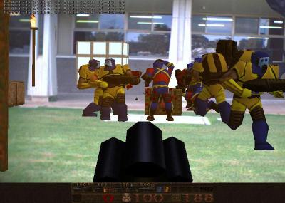

ARQuake(){
Entrevista
printf: Você desenvolveu o ARQuake. Por favor, nos explique o que ele é e quais são as principais propostas deste artefato.
Bruce: ARQuake é uma versão em Realidade Aumentada do jogo Quake. ARQuake permite que o usuário corra através do mundo real enquanto joga em um mundo gerado por computador projetado em uma tela colocada em sua cabeça e com a qual pode-se ter a interação entre os dois mundos. As teclas de movimento do jogo foram substituídas por um GPS e atualizações de uma bússola digital. Os comandos de tiro são integrados a uma arma de brinquedo customizada.
A principal proposta do ARQuake foi motivar estudantes de graduação a trabalhar em um projeto de Realidade Aumentada comigo!
printf: Quais foram as suas principais dificuldades enquanto você desenvolvia o ARQuake?
Bruce: As principais dificuldades foram de que a tecnologia de sensoriamento era muito ruim, e de que o Quake não foi desenvolvido para os humanos correrem e ao mesmo tempo jogar. Os monstros são muito rápidos.
printf: Há alguma intensão de fazer o ARQuake ser um software comercial?
Bruce: Nós tentamos fazer a companhia a_rage. Realmente era muito cedo a 5 anos atrás quando nós tentamos fazer isso. Vocês podem ver um pouco disso em http://a-rage.com/
printf: Você tem algum outro projeto de desenvolvimento de jogos em Realidade Aumentada?

Jogo ARQuake
Bruce: Estamos agora pesquisando sobre Realidade Aumentada Espacial (Spatial Augmented Reality - SAR), um ramo de pesquisa em RA que utiliza projetores digitais como a tecnologia de exibição. O laboratório realiza pesquisas sobre novas técnicas de interação e sistemas de SAR, apresentação de informação, e técnicas avançadas de renderização. Nós temos um novo laboratório que tem 14 metros por 8.5 metros por 4 metros, e ele tem 40 projetores. Nós podemos renderizar em um espaço do tamanho de um carro! Vocês podem ver tudo sobre o nosso trabalho em http://wearables.unisa.edu.au/
printf: Nós temos alguns alunos de Ciência da Computação interessados em RA. Quais são os passos que eles devem seguir para que você possa ser o tutor deles?
Bruce: Por favor, me envie o seu currículo e algumas ideias sobre o que e em que você quer trabalhar. Nós tivemos mais de uma dúzia de internos internacionais em nosso laboratório com o passar dos anos.
}